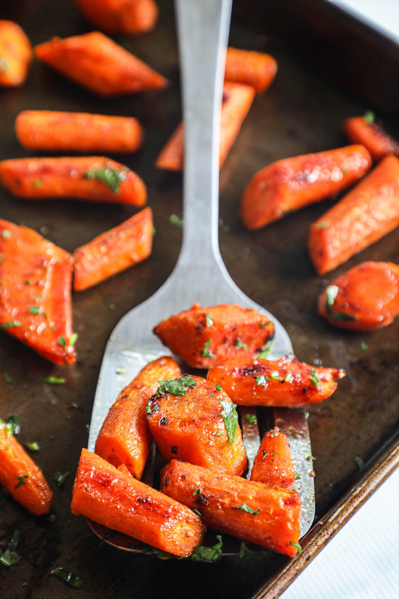

Glazed Maple Carrots

Description
Maple Glazed Carrots are one of those fantastic sides that’s just as perfect for a holiday gathering as it is for a weeknight dinner—and just as easy too! A buttery maple glaze full of cozy spices makes it a crowd-pleaser, with the perfect balance of sweet and savory flavors.
Ingredients
- Carrots - both baby and regular work
- Maple Syrup
- Garlic
- Cinnamon and ground ginger
- Salt and pepper
Steps
- peel the carrots and cut into pieces
- toss them with garlic, cinnamon, ground ginger, salt, pepper, maple syrup, and butter
- roast them in the oven until slight tenderness, then flip the carrots
- roast them until fully tender
Back to Home